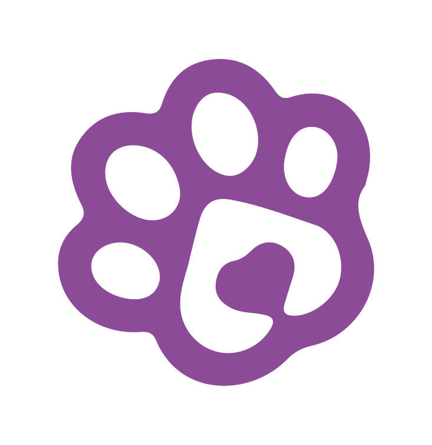

¿Listo para trabajar?
Al entrar de turno te avisamos por WhatsApp cuando llegue un paciente tuyo.
Sí, estoy de turno
¿Quién eres?
Ahora no, solo quiero mirar
🧪 MODO PRUEBA ENCENDIDO — los médicos NO están recibiendo avisos por WhatsApp

Animal Center
Cargando registros...
↻ Actualizar
🔔 Sala de espera
📋 Anamnesis
✓ Atendidas
🔍
👁 Ver todos los pacientes
General
Especializada
Control
Vacunación
Inyectología
Rayos X y Ecografía
Viajero